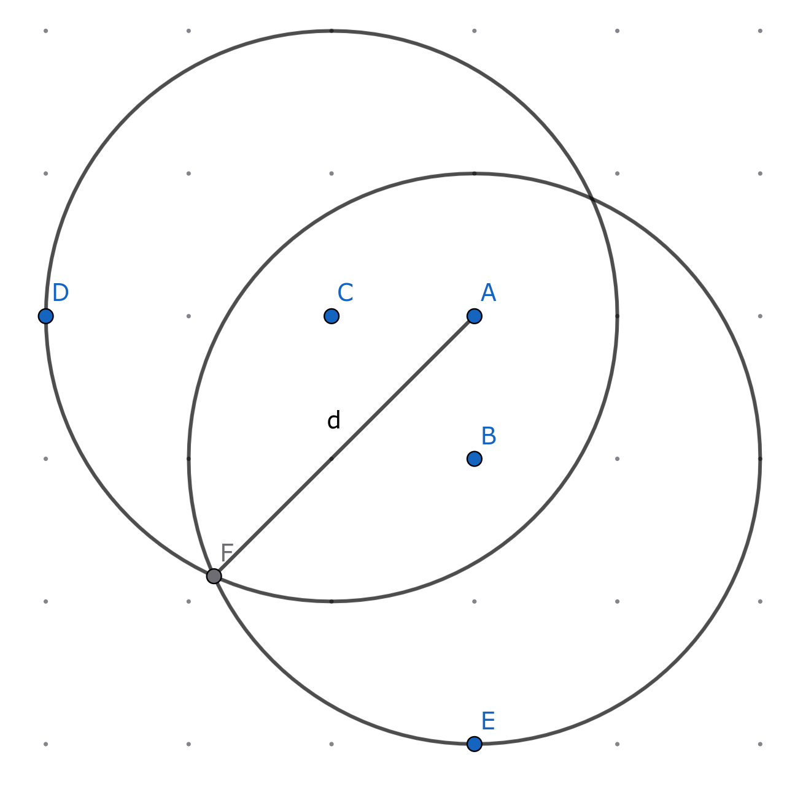

距离变换算法
https://perso.telecom-paristech.fr/bloch/ANIM/Danielsson.pdf
给定二维数组 \(a_{i,j}\)，其中所有的元素为 \(0\) 或 \(1\)，且 \(i \in [1,n], j \in [1,m]\)。
定义所有元素为 \(1\) 的点集为 \(S= \{(i,j): a_{i,j} = 1\}\)，其补 \(\bar S = \{(i,j): a_{i,j} = 0\}\)。
定义距离度量函数
\[ ||(i,j)||_p = \left( |i|^p + |j|^p \right)^{1/p} \]
设计算法，输出一个二维数组 \(d_{i,j}\)，满足
\[ d_{i,j} = \min_{(h,k) \in S} ||(i-h,j-k)||_p \]
你的算法应当处理：
- \(p=1\) 时的情况（曼哈顿距离）
- \(p=2\) 时的情况（欧氏距离）
分析
如果我们视 \(a_{i,j}\) 中的元素为 \(1\) 的点为物体占据的空间，元素为 \(0\) 的点为外部空间，那么 \(d_{i,j}\) 就是 \(a_{i,j}\) 的距离场。因此，这个问题是一个二维的距离场生成问题。
显然有一个 \(O(n^2m^2)\) 的暴力算法，可以处理任意的 \(p\)：遍历每个 \((i,j)\)，BFS 寻找最近的 \((h,k) \in S\)。这个算法可以用多线程优化，开启 \(nm\) 个线程，每个线程只需 \(O(nm)\) 工作量。那么，有没有办法优化这个暴力算法呢？
距离变换算法
曼哈顿距离
我们先考虑 \(p=1\) 时的情况。
我们对每个 \((i,j)\)，保存其最近的 \((h^*,k^*) \in S\) 的信息。如果 \((i,j)\) 周围的 4 个点都已经计算了最近的 \((h,k)\)，只需考虑从这些 \((h,k)\) 中选一个曼哈顿距离最小的，然后将该结果加 1 即可得到 \(d_{i,j}\)。这是一种动态规划的思想。
形式化地，记
\[ (h^*,k^*) = \arg \min_{(h,k) \in S} ||(i-h,j-k)||_p, \]
定义
\[ f_{i,j} = (i-h^*,j-k^*), \]
则其状态转移方程为
\[ f_{i,j} = \min \begin{cases} f_{i-1,j} + (1,0), \\ f_{i,j-1} + (0,1), \\ f_{i+1,j} + (-1,0), \\ f_{i,j+1} + (0,-1), \end{cases} \]
其中，\(\min ((i_1,j_1), \dots, (i_n, j_n))\) 的定义为
\[ \min ((i_1,j_1), \dots, (i_n, j_n))= \arg \min_{(i,j)} ||(i,j)||_p. \]
最终结果在
\[ d_{i,j} = ||f_{i,j}||_p. \]
初值条件为
\[ f_{i,j} = \begin{cases} (+\infty, +\infty) , (i,j) \in \bar S, \\ (0,0) , (i,j) \in S. \end{cases} \]
可以证明，如此递推对曼哈顿距离是正确的。但我们需要两趟遍历才能处理这个状态转移方程。具体地：
第一次遍历：正序遍历（\(i\) 递增，\(j\) 递增），更新每个 \(f_{i,j}\)：
\[ f_{i,j} = \min \begin{cases} f_{i,j}, \\ f_{i-1,j} + (1,0), \\ f_{i,j-1} + (0,1), \end{cases} \]
第二次遍历：倒序遍历（\(i\) 递减，\(j\) 递减），更新每个 \(f_{i,j}\)：
\[ f_{i,j} = \min \begin{cases} f_{i,j}, \\ f_{i+1,j} + (-1,0), \\ f_{i,j+1} + (0,-1), \end{cases} \]
这样即可在 \(O(nm)\) 的时间复杂度下计算 \(d_{i,j}\)，但需要额外的 \(O(nm)\) 空间。
欧氏距离
我们考虑 \(p=2\) 的情况。我们可以将上述曼哈顿距离的做法故技重施，只需修改距离度量的 \(p\) 为 \(2\) 即可，这就是 4SEDT (4-point Sequential Euclidean Distance Transform) 算法。但可以证明，这种算法可能存在误差，某些 \(d_{i,j}\) 可能会高估实际欧氏距离。误差分析如下：

考虑点 A \((i,j)\) 的邻近点 B \((i+1,j)\) 和 C \((i,j+1)\)。如果 B 和 C 恰好分别记录了一个距离为 \(r\) 的点 D \((i + 1 + r, j)\) 和 E \((i, j+1+r)\) 为最近点，没有记录等距的点 F 为最近点，那么 A 的最近点，依据动态规划算法，将会是 D 和 E 之中的一个，并且距离为 \(d_{i,j} = r+1\)。但实际上 A 到 F 的距离 \(d\) 会更小。若 AF、AD 成 45 度角，则成立几何关系
\[ r^2 = \left( \frac{d}{\sqrt 2} \right)^2 + \left( \frac{d}{\sqrt 2} - 1 \right)^2. \]
解得
\[ r = \sqrt{ d^2 - \sqrt 2 d + 1 }. \]
那么，误差将是
\[ e(d) = (r+1) - d = \sqrt{ d^2 - \sqrt 2 d + 1 } - d + 1. \]
其中 \(d\) 位于斜 45 度角方向上，因此满足 \(d = \sqrt 2 n\)，\(n\) 为正整数。
\(e(d)\) 是一个单调递减的函数，最大值为 \(e(\sqrt 2) = 2 - \sqrt 2 \approx 0.58\)，但该值因网格的离散性而实际不可能取到。
另一方面：
\[ \begin{aligned} e(d) - 1 &= \sqrt{ d^2 - \sqrt 2 d + 1 } - d \\ &= \frac{(\sqrt{ d^2 - \sqrt 2 d + 1 } - d)(\sqrt{ d^2 - \sqrt 2 d + 1 } + d)}{\sqrt{ d^2 - \sqrt 2 d + 1 } + d} \\ &= \frac{- \sqrt 2d + 1}{\sqrt{ d^2 - \sqrt 2 d + 1 } + d} \\ &= \frac{- \sqrt 2 + \frac{1}{d}}{\sqrt {1 + \frac{\sqrt 2}{d} + \frac{1}{d^2}} + 1} \end{aligned} \]
故
\[ \lim_{d \to +\infty} e(d) = 1-\frac{\sqrt 2}{2} \approx 0.29 \]
由于网格的离散性，这可用于估计实际产生的最大误差。这个误差很小，意味着距离场的计算基本上是正确的，适合对精确度要求不太高的应用。
如果同时考虑每个 \((i,j)\) 的周围 8 个而非仅 4 个邻近点取 min，就得到了 8SEDT 算法，这个算法的最大误差更小，仅为 \(0.09\)，因此广泛用于求解 2D 距离场。
SDF 的求解
https://zhuanlan.zhihu.com/p/258069156
上述的算法都是在求解物体外部空间的距离场，如果要求解有向距离场（SDF），只需额外进行一步操作：反转 \(S\) 和 \(\bar S\)，再求解一次 \(d_{i,j}\)，然后为求解的所有 \(d_{i,j}\) 添上负号，最后合并两步操作的非零 \(d_{i,j}\) 即可。改造后的算法的命名将从 SEDT 变更为 SSEDT (Signed SEDT)。
更多距离变换算法
针对不同的距离度量函数 \(||(i,j)||\)，有各种距离变换算法求解距离场，误差极小，或针对部分任务进行了优化，详见
https://citeseerx.ist.psu.edu/document?repid=rep1&type=pdf&doi=14c6e1507d9db51c4f6706dab836f3f866dd2a7c
推广到高维
以上算法也可以推广到三维空间。考虑每个三维体素周围有 26 个体素，因此算法将变成 26SSEDT。然而，在网上没看到有人实践过这一算法。
使用 26SSEDT 时，相对二维情况，需要六次遍历而非只需两次遍历，因此时间开销、空间开销将常数级增大。此外，26SSEDT 的误差也将有所增大，这可能是它并不实用的原因。
对于三维的 SDF 生成算法，业界一般使用 BVH 优化的多线程暴力算法（UE4 的做法），或者 JFA 算法，后者会存在一些可忽略不计的误差。